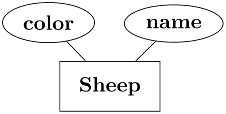

The TikZ and PGF Packages
Manual for version 3.1.10
Libraries
51 Entity-Relationship Diagram Drawing Library¶
-
TikZ Library er ¶
\usetikzlibrary{er} %
LaTeX
and plain
TeX
\usetikzlibrary[er] % ConTeXt
This packages provides styles for drawing entity-relationship
diagrams.
This library is intended to help you in creating E/R-diagrams. It defines only few new styles, but using the style entity instead of saying rectangle,draw makes the code more expressive.
51.1 Entities¶
The package defines a simple style for drawing entities:
-
/tikz/entity(style, no value) ¶
This style is to be used with nodes that represent entity types. It causes the node’s shape to be set to a rectangle that is drawn and whose minimum size and width are set to sensible values.
Note that this style is called entity despite the fact that it is to be used for nodes representing entity types (the difference between an entity and an entity type is the same as the difference between an object and a class in object-oriented programming). If this bothers you, feel free to define a style entity type instead.
\usetikzlibrary {er,positioning}
\begin{tikzpicture}
\node[entity] (sheep) {Sheep};
\node[entity] (genome) [right=of sheep] {Genome};
\end{tikzpicture}
-
/tikz/every entity(style, no value) ¶
This style is evoked by the style entity. To change the appearance of entities, you can change this style.
\usetikzlibrary {er,positioning}
\begin{tikzpicture}
[every entity/.style={draw=blue!50,fill=blue!20,thick}]
\node[entity] (sheep) {Sheep};
\node[entity] (genome) [right=of sheep] {Genome};
\end{tikzpicture}
51.2 Relationships¶
Relationships are drawn using styles that are very similar to the styles for entities.
-
/tikz/relationship(style, no value) ¶
This style works like entity, only it is to be used for relationships. Again, relationships are actually relationship types.
\usetikzlibrary {er}
\begin{tikzpicture}
\node[entity] (sheep) at
(0,0) {Sheep};
\node[entity] (genome) at
(2,0) {Genome};
\node[relationship] at
(1,1.5) {has}
edge
(sheep)
edge
(genome);
\end{tikzpicture}
-
/tikz/every relationship(style, no value) ¶
Works like every entity.
\usetikzlibrary {er}
\begin{tikzpicture}
[every entity/.style={fill=blue!20,draw=blue,thick},
every relationship/.style={fill=orange!20,draw=orange,thick,aspect=1.5}]
\node[entity] (sheep) at
(0,0) {Sheep};
\node[entity] (genome) at
(2,0) {Genome};
\node[relationship] at
(1,1.5) {has}
edge
(sheep)
edge
(genome);
\end{tikzpicture}
51.3 Attributes¶
-
/tikz/attribute(style, no value) ¶
This style is used to indicate that a node is an attribute. To connect an attribute to its entity, you can use, for example, the child command or the pin option.

\usetikzlibrary {er}
\begin{tikzpicture}[every pin edge/.style=draw]
\node[entity,pin={[attribute]60:name},pin={[attribute]120:color}] {Sheep};
\end{tikzpicture}
-
/tikz/key attribute(style, no value) ¶
This style is intended for key attributes. By default, the will cause the attribute to be typeset in italics. Typically, underlining is used instead, but that looks ugly and it is difficult to implement in TeX.
-
/tikz/every attribute(style, no value) ¶
This style is used with every attribute, and therefore also for every key attribute.
\usetikzlibrary {er}
\begin{tikzpicture}
[text depth=1pt,
every attribute/.style={fill=black!20,draw=black},
every entity/.style={fill=blue!20,draw=blue,thick},
every relationship/.style={fill=orange!20,draw=orange,thick,aspect=1.5}]
\node[entity] (sheep) at
(0,0) {Sheep}
child
{node
[key attribute] {name}};
\node[entity] (genome) at
(2,0) {Genome};
\node[relationship] at
(1,1.5) {has}
edge
(sheep)
edge
(genome);
\end{tikzpicture}